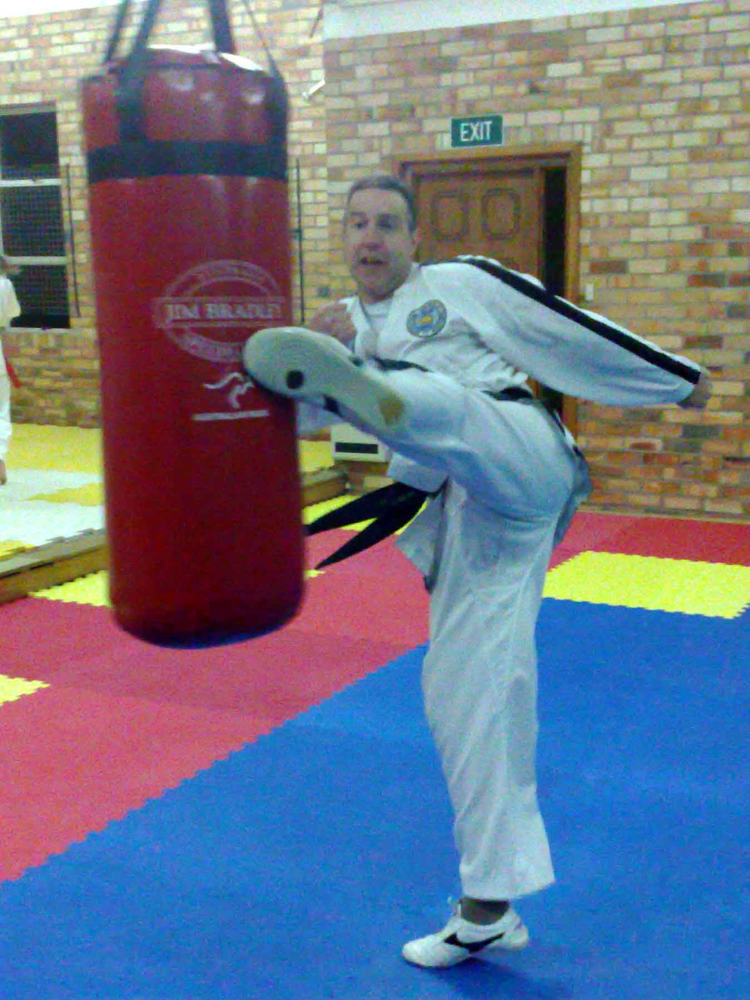

| » Senior Instructor | Back | ||
|
 Steve Weston, VIth Degree International Instructor |
|||
|
Steve Weston, is the sixth degree black belt International Instructor/Examiner of Southern ITF Taekwon-Do. He has been teaching Taekwon-Do for over twenty years. Apart from his professional qualifications as a medical scientist and science teacher he has also completed courses in fitness instruction, coaching and first aid. He is currently on the executive of the Tasmanian Martial Arts Council and has been involved with setting up and running a coaching course for Martial Arts instructors in Tasmania.
He began his martial arts career in 1983 in Rhee Taekwon-Do (Australia) and achieved the rank of first degree in November 1986. In 1993 he joined the ITF and performed a recognition grading for first degree. He has subsequently passed gradings for 2nd, 3rd, 4th and 5th degree and was graded for sixth degree in 2008 by the ITF Technical committee. Since Joining the ITF he has attended four International courses with General Choi, one with Grandmaster Rhee Ki Ha, three with Master Choi Jung Hwa and three with the ITF Technical committee as well as many national seminars with International Instructors. Steve has also competed in National and International competitions and has consistently won medals each time he has entered. In 1996 he took out the gold medal in the black belt patterns division of the Australasian Championships. He has also coached many students that have won significant events in competition including several Australian, Australasian and Oceanic champions. Two of his students have also competed in the ITF World Championships and he has acted as the Australian Coach in Argentina in 1999 and as a referee/umpire in Italy in 2001, Quebec in 2007 and Argentina in 2009 where James Jestrimski, one of his 1st Degree black belts won a Silver medal for Junior Power Breaking. In 2000 Steve was awarded a medal by the Australian government for his contribution to sport in Australia. As senior instructor for Southern ITF Taekwon-Do he has personally enrolled over 500 students and trained over 50 black belts. He runs classes each week night at a dedicated dojang in Hobart. Despite his competition awards Steve believes that apart from its obvious self defence aspect, the purpose of Taekwon-Do is to allow students to develop self confidence and attain their chosen goals. As General Choi points out Though it is a martial art, it’s discipline, techniques, and mental training are the mortar for building a strong sense of justice, humility and resolve. It is this mental conditioning that separates the true practitioner from the sensationalist content with mastering only the fighting aspects of the art. |
|||
| >> Steve's Assistant Instructors and Black belts | Top | ||
|
|||